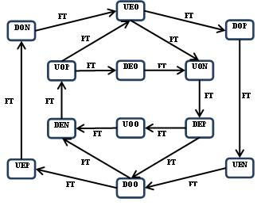

Results summarizing the paper that was included in the Martin Gardner
trbute by Collkege Mathematic's Journal. CMJ
2010, posted 7/22/2011 Hua Wang - The number of pats of degree 3n+1 is C(4n,n)/(3n+1) and of degree
3n+2 is 2*C(4n+1,n)/(3n+2). |C(n)| = C(3n+2,5)/3 + 2n/3. C(n) is explained on Page 2, while C(n,r) is the
combination of n things taken r at a time.
2010 posted 7/22/2011 Ionut E. Iacob - Triangle States Transition graph. 
2/1/2011 Ionut Emil Iacob's latest
applet
for flexagons of various sizes. (no longer available)
6/26/2010 I do not have a
proof that all regular flexagons can be
translated by 1 and Ralph Jones pointed this out to me recently. I
ignored this fact in our recent
paper, "The combinatorics of
all regular flexagons." In 1979, I gave a constructive proof that it was true for the
hexahexaflexagon. With some help from Emily McLean and a java program, I found a similar
demonstrative proof
for
the nonahexaflexagon. Thus I can really say that the nonahexaflexagon has
2,718,576 mathematical faces.
The following gif shows the
Main Cardioid for the nona. The top and right side provides a different path to face 9 of the Main
Cardioid.
Face 12 of the alternate path is a 13 translate of the first one.
Since 13 and 27 are relatively prime, we really can translate any nona face by any amount making the effort
worthwhile
in the 2010 paper. The translates in 1979 were easy to find and I made the assumption
that they would be easy to find in the nona and the dodeca. Unfortunately we
had to use a java program that looked at more than 4000 of the 100698 initial faces before we
found
the first one that appears in the 'directions' below.
| |